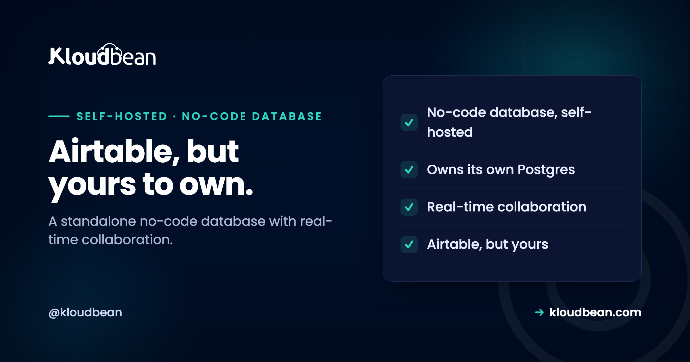

Self-Host Baserow: The Standalone No-Code Database (vs NocoDB)

If you want an Airtable you own, the open-source world hands you two strong options: Baserow and NocoDB. They look similar in a screenshot, both give you that friendly grid of rows and fields, and people treat them as interchangeable. They are not. There is one structural difference that decides which one you actually want, and it has nothing to do with the colour of the buttons. It is about where your data lives and who owns it. Baserow is a standalone no-code database that brings its own; NocoDB is a layer over a database you already have. Get that right and the choice makes itself.
Baserow is an open-source, self-hostable Airtable alternative, and it is a complete no-code platform: it runs its own PostgreSQL database and adds an app builder, automation, dashboards, role-based permissions, and real-time collaboration on top. Self-host it when you want a standalone no-code database to build in from scratch, with live multi-user editing. The key contrast is NocoDB, which puts a spreadsheet interface over an existing SQL database rather than owning one. One honest note: Baserow's core is open source, but some views like Kanban and calendar are Premium and need a paid license, so check current terms. It runs as a standard app with PostgreSQL, not a one-click install.
What Baserow actually is
Not just a grid, but a small platform that wants to be your whole no-code back end.
Baserow is an open-source no-code database that looks like a spreadsheet and behaves like a database: tables, fields, views, filters, and links between tables, all editable by non-technical people. Where it goes further than a simple grid is in trying to be the entire stack. It manages its own PostgreSQL database, and layers on an application builder, an automation engine, dashboards, role-based permissions, and real-time collaboration, with an API-first design so developers can build against it too. The core is open source under a permissive license, and you run it yourself to keep your data in-house.
That "manages its own database" phrase is the important one. Baserow is self-contained: you point it at a fresh PostgreSQL and it owns the structure inside, presenting it through its friendly interface. That is a different starting point from the other popular open-source Airtable alternative, and the difference is the next section.
Baserow or NocoDB? Where your data lives decides it
This is the fork in the road, and it is genuinely structural rather than a matter of taste.
Baserow is a standalone no-code database: it brings and manages its own PostgreSQL, and your data lives inside Baserow's world. NocoDB takes the opposite approach: it is a visual interface that sits on top of an existing SQL database, turning tables you already have into an Airtable-like UI without owning them. So the decision comes down to one question. Do you already have a SQL database that should stay the source of truth, with other systems using it directly? Then NocoDB, which wraps it, is the natural fit. Do you want to start fresh with a no-code database and have the tool be the whole stack, with live collaboration built in? Then Baserow is built for exactly that.
| Baserow | NocoDB | |
|---|---|---|
| Model | Standalone no-code database | Interface over an existing database |
| The database | Brings and owns its own Postgres | Connects to your existing SQL DB |
| Real-time collaboration | Yes, live edits | Changes generally need a refresh |
| Best when | Fresh start, be the whole stack | You have a database to expose |
| Extras | App builder, automation, dashboards | Spreadsheet UI over your schema |
| Choose it when | You want a standalone no-code DB | Your existing DB stays the source of truth |
Real-time collaboration, a genuine edge
Small feature to describe, big difference to live with when a team shares a base.
Baserow supports real-time collaboration: when a teammate edits a row, you see it change, the way you would expect from a modern shared tool. NocoDB, sitting over an external database, generally needs a refresh to show changes made by others, which can lead to people overwriting each other or working from stale data. If a handful of people are in the same base at once, that difference stops being a nicety and starts being about avoiding conflicts and lost edits. For collaborative, in-the-tool work, it is one of the clearest reasons to prefer Baserow, and it follows directly from Baserow owning its own database rather than reaching into someone else's.
The Premium caveat, said plainly
Volunteering this because a self-hoster should not discover it halfway through building a workflow.
Baserow's core is open source and free to self-host, and it covers a lot. But not every feature is in the free core. Some views, such as Kanban and calendar, are Premium and require a paid license, so if your plan depends on a Kanban board or a calendar view, budget for that rather than assuming everything is included. Licensing details change, so check Baserow's current terms for exactly what sits in the free core versus the paid tiers before you commit a workflow to a Premium-only view. None of this makes Baserow less worth running, and the open core is genuinely capable. It just means "open source" and "every feature is free" are not the same sentence, and knowing the line up front saves a surprise.
What it takes to run, and backups
A modest server, a PostgreSQL database, and a backup habit, in the familiar shape.
Baserow runs as an application with PostgreSQL behind it, and a starting point of roughly a couple of CPUs and a few gigabytes of memory is a reasonable expectation for a small team, scaling up with usage. You put it behind a reverse proxy with HTTPS and point it at a database. Since Baserow owns its own PostgreSQL, that database is where all your tables and data live, so it is the thing to protect: pointing it at a managed PostgreSQL keeps it maintained and automatically backed up, and attachments belong in object storage. A regular database dump plus attachments, shipped off the server with a tested restore, as in the backups guide, is your safety net.
Where hosting fits, honestly
Baserow is a comfortable app-plus-database deployment, and a managed platform handles the parts you would rather not. You run it as a standard application across any of seven clouds, behind a managed reverse proxy with free auto-renewing SSL, pointed at a managed PostgreSQL so the database it owns is maintained and automatically backed up, with attachments in object storage. One dashboard, and a resize when your team grows. It is not a one-click app, but it is a well-trodden path.
The honest boundary: the platform runs the server, the PostgreSQL database, SSL, and backups. The Baserow application, your data, and any Premium license you take out are yours. Managed hosting keeps Baserow dependable and its database safe. It does not decide your feature tier, so keep the free-versus-Premium line on your own checklist.
Related reading
For the wrap-an-existing-database alternative and the full comparison, self-hosting NocoDB. For the wider set of tools worth owning, the best self-hosted tools guide. The database underneath is managed PostgreSQL, kept safe with server backups, and attachments live in object storage. If you want to automate around your base, self-hosting n8n pairs nicely.
Run a no-code database you own.
Host Baserow as an app on a managed server across seven clouds, with managed PostgreSQL for the database it owns, free auto-renewing SSL, and automatic backups. Live collaboration, your data in-house. Start at kloudbean.com or see pricing.
Managed server · Managed PostgreSQL · Free auto-renewing SSL · Automatic backups
FAQ
What is Baserow?
Baserow is an open-source, self-hostable no-code database and Airtable alternative. It presents a friendly spreadsheet-like interface over a real database, and goes further into being a platform, with an app builder, automation, dashboards, role-based permissions, and real-time collaboration. It manages its own PostgreSQL database and is API-first, so both non-technical users and developers can work with it. The core is open source and free to self-host.
Baserow or NocoDB, which should I self-host?
It depends on where your data lives. Baserow is a standalone no-code database that brings and owns its own PostgreSQL, ideal when you want to start fresh and have the tool be the whole stack. NocoDB is a visual interface over an existing SQL database, ideal when you already have a database that should stay the source of truth. Ask whether you are wrapping an existing database or starting a new one, and the answer is clear.
Does Baserow support real-time collaboration?
Yes, and it is one of its clearest advantages. When a teammate edits a row in Baserow, you see the change live, without refreshing. NocoDB, which sits over an external database, generally needs a refresh to show others' changes, which can cause conflicts or stale views when several people work at once. For collaborative, in-the-tool work, Baserow's live editing is a meaningful benefit.
Is Baserow completely free?
The core is open source and free to self-host, and it is capable on its own. However, some features and views, such as Kanban and calendar, are Premium and require a paid license. So if your plan relies on those specific views, budget for the Premium tier rather than assuming everything is free. Licensing changes over time, so verify the current split between free core and paid features before committing a workflow to a Premium-only view.
What database does Baserow use?
PostgreSQL, which Baserow manages itself. Unlike tools that connect to an existing database, Baserow brings its own and owns the structure inside it. All your tables and data live in that PostgreSQL database, which is why pointing it at a managed PostgreSQL is the sensible choice: it keeps the database maintained and automatically backed up.
What does Baserow need to run?
It runs as an application with PostgreSQL behind it, and a starting point of around a couple of CPUs and a few gigabytes of memory suits a small team, scaling with usage. You put it behind a reverse proxy with HTTPS, point it at a database, and keep attachments in object storage. It is a standard app-plus-database deployment rather than a one-click install.
How do I back up Baserow?
Back up the PostgreSQL database, since Baserow owns it and all your tables and data live there, plus attachments in object storage. Ship a database dump off the server automatically on a schedule and test a restore once so you know it works. Using a managed PostgreSQL puts the most important part on an automatic backup routine, which is the right place to be relaxed about your data.
Is Baserow a one-click app on Kloudbean?
No. Baserow runs as a standard application with a PostgreSQL database rather than a one-click install. The setup is well understood: a right-sized server, a managed PostgreSQL for the database it owns, free SSL, and object storage for attachments. The platform keeps the server and database healthy, while the Baserow app, your data, and any Premium license stay yours.